Candidate List 20260905Last night — ZTF: 2,503 passed basic cuts (112 young) · LSST: 0 passed basic cuts (0 young)Previous Day Next Day
Section 1: New Sources (age<1d) Section 2: Old (1-5d) sources observed last nightplaceholder
Section 1: New Afterglow/FBOT Cands Last Night (1)
1. [ZTF] ZTF26abskcrd (FBOT?) [Back to Top] [Share] [Trigger Swift] [Fritz Alert] [Fritz Source] [Lasair]RA, Dec: 272.68752, 64.64494 18h10m45.01s, 64d38m41.79sGalactic (l, b): 94.22863, 28.64399 ext(g-r) = 0.045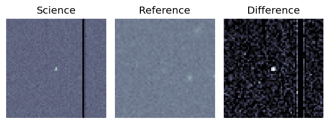
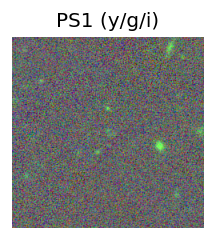
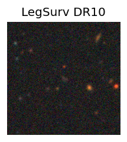
TESS: Sectors [ 15 16 18 19 20 21 22 23 24 25 26 40 41 48 49 50 51 52
53 55 56 57 58 75 76 77 78 79 80 81 83 84 85 117 118 120
121]
SDSS (<15 kpc):Found SDSS phot-z: z=0.30; peak abs mag = -22.13
PS1: 0 sources in 3 arcsec
LegacySurvey: 1 sources in 3 arcsec Closest: d = 0.61 arcsec, 226.2 deg (east of north) photoz=1.11 (68% bounds 0.88, 1.28), type=EXP peak abs mag (ext. corrected) = -25.55 (68% bounds -24.93, -25.92)
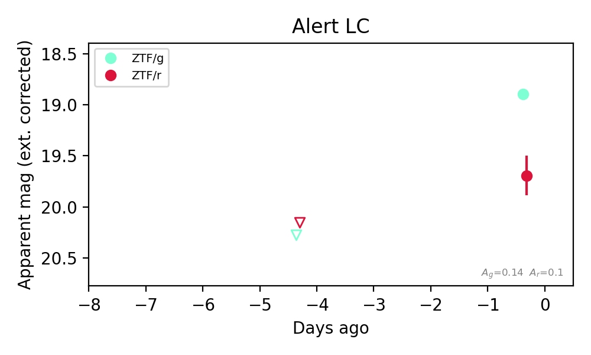
Extinction-corrected gr color:
From alerts: -0.8 +/- 0.2 mag
Rise Rate:
g: 0.35 mag/day
r: 0.12 mag/day
Fade Rate:
Section 2: Older Sources Observed Last Night (11)
0. [ZTF] ZTF26abrijwb (Afterglow?) [Back to Top] [Share] [Trigger Swift] [Fritz Alert] [Fritz Source] [Lasair]RA, Dec: 261.12352, 11.6362 17h24m29.64s, 11d38m10.30sGalactic (l, b): 33.82068, 24.50583 ext(g-r) = 0.174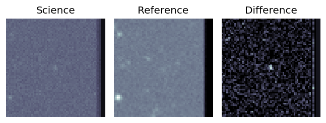
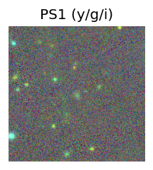
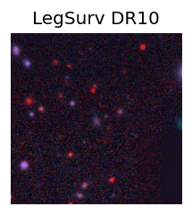
TESS: Sectors 118
PS1: 0 sources in 3 arcsec
LegacySurvey: 1 sources in 3 arcsec Closest: d = 1.23 arcsec, 181.4 deg (east of north) photoz=0.24 (68% bounds 0.19, 0.31), type=EXP peak abs mag (ext. corrected) = -21.13 (68% bounds -20.5, -21.75)
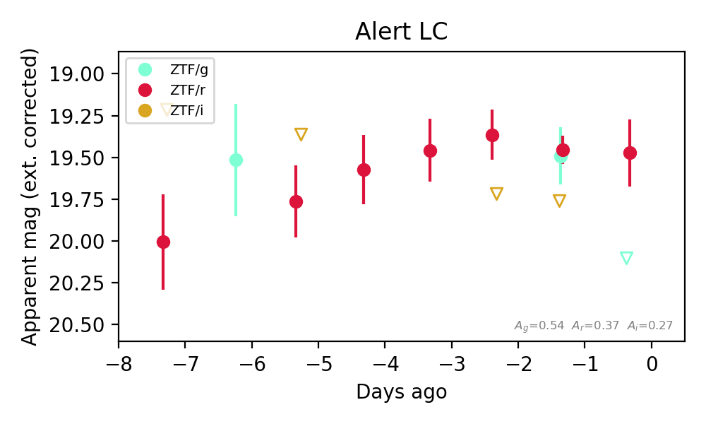
Extinction-corrected gr color:
From alerts: 0.63 +/- 99 mag
Extinction-corrected gi color:
From alerts: -0.27 +/- 99 mag
Extinction-corrected ri color:
From alerts: -0.3 +/- 99 mag
Rise Rate:
g: 0.03 mag/day
Fade Rate:
g: 0.62 mag/day
1. [ZTF] ZTF26abrmdnv (FBOT?) [Back to Top] [Share] [Trigger Swift] [Fritz Alert] [Fritz Source] [Lasair]RA, Dec: 357.1566, 50.42315 23h48m37.58s, 50d25m23.33sGalactic (l, b): 112.80744, -11.20976 ext(g-r) = 0.196


TESS: Sectors [17 24 57 84]
PS1: 1 source in 3 arcsec Closest: d = 7.58 arcsec photoz=0.09+/-0.02 peak abs mag = -20.51
LegacySurvey: 0 sources in 3 arcsec

Extinction-corrected gr color:
From alerts: -0.2 +/- 0.08 mag
Rise Rate:
g: 0.3 mag/day
r: 0.33 mag/day
Fade Rate:
2. [ZTF] ZTF26abrpjdl (FBOT?) [Back to Top] [Share] [Trigger Swift] [Fritz Alert] [Fritz Source] [Lasair]RA, Dec: 320.11244, 2.17822 21h20m26.99s, 2d10m41.58sGalactic (l, b): 54.20305, -31.40075 ext(g-r) = 0.064


TESS: Sectors [55 82]
SDSS (<15 kpc):Found SDSS phot-z: z=0.10; peak abs mag = -20.28
PS1: 0 sources in 3 arcsec
LegacySurvey: 1 sources in 3 arcsec Closest: d = 2.83 arcsec, 322.0 deg (east of north) photoz=0.07 (68% bounds 0.05, 0.11), type=REX peak abs mag (ext. corrected) = -19.61 (68% bounds -18.58, -20.46)

Extinction-corrected gr color:
From alerts: -0.14 +/- 0.11 mag
Extinction-corrected gi color:
From alerts: -0.52 +/- 0.11 mag
Extinction-corrected ri color:
From alerts: -0.38 +/- 0.1 mag
Rise Rate:
g: 0.35 mag/day
r: 0.39 mag/day
i: 0.4 mag/day
Fade Rate:
3. [ZTF] ZTF26abrqvav (FBOT?) [Back to Top] [Share] [Trigger Swift] [Fritz Alert] [Fritz Source] [Lasair]RA, Dec: 63.66239, 17.24228 4h14m38.97s, 17d14m32.22sGalactic (l, b): 176.86709, -23.70494 WARNING: -3.93 deg from ecliptic plane ext(g-r) = 0.646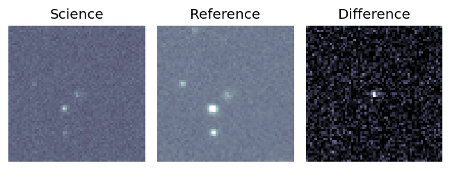
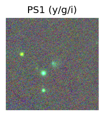

TESS: Sectors [43 44 70 71]
SDSS (<15 kpc):Found SDSS phot-z: z=0.03; peak abs mag = -17.25
PS1: 1 source in 3 arcsec Closest: d = 0.37 arcsec photoz=0.56+/-0.14 peak abs mag = -24.36
LegacySurvey: 0 sources in 3 arcsec
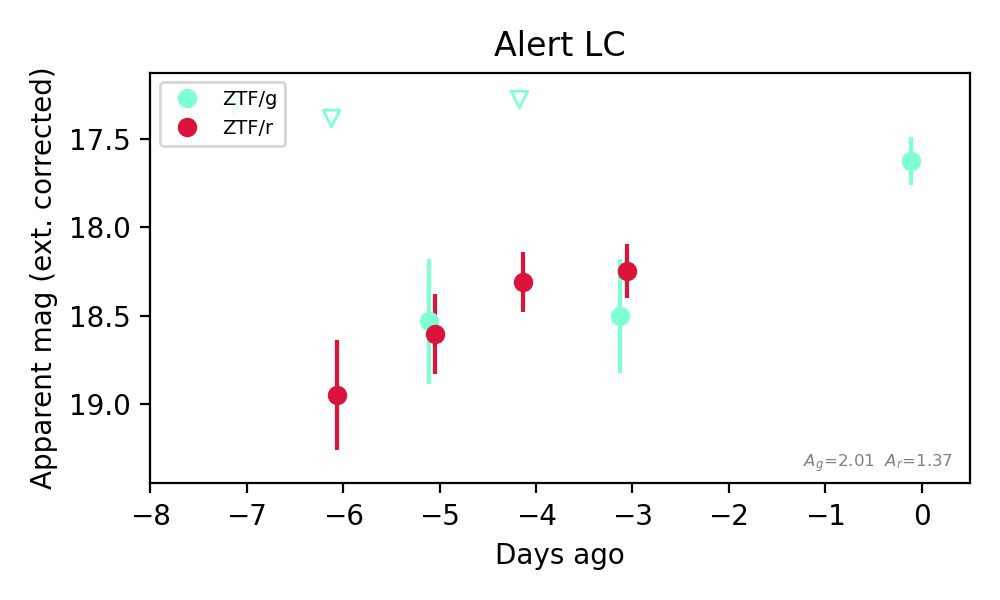
Extinction-corrected gr color:
From alerts: 0.26 +/- 0.36 mag
Consistent with synchrotron, g-r>0!
Rise Rate:
g: 0.21 mag/day
r: 0.21 mag/day
Fade Rate:
4. [ZTF] ZTF26abrvcge (FBOT?) [Back to Top] [Share] [Trigger Swift] [Fritz Alert] [Fritz Source] [Lasair]RA, Dec: 255.54671, 33.04468 17h 2m11.21s, 33d 2m40.85sGalactic (l, b): 55.52489, 36.22503 ext(g-r) = 0.025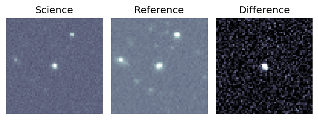
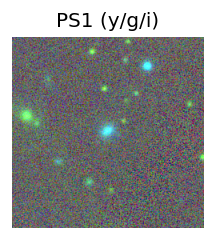
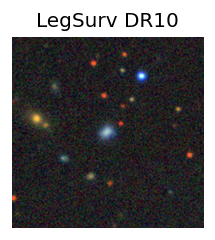
TESS: Sectors [ 25 52 79 117 118]
SDSS (<15 kpc):Found SDSS phot-z: z=0.06; peak abs mag = -19.50
PS1: 0 sources in 3 arcsec
LegacySurvey: 1 sources in 3 arcsec Closest: d = 0.39 arcsec, 90.4 deg (east of north) photoz=0.04 (68% bounds 0.02, 0.06), type=EXP peak abs mag (ext. corrected) = -18.4 (68% bounds -17.49, -19.36)
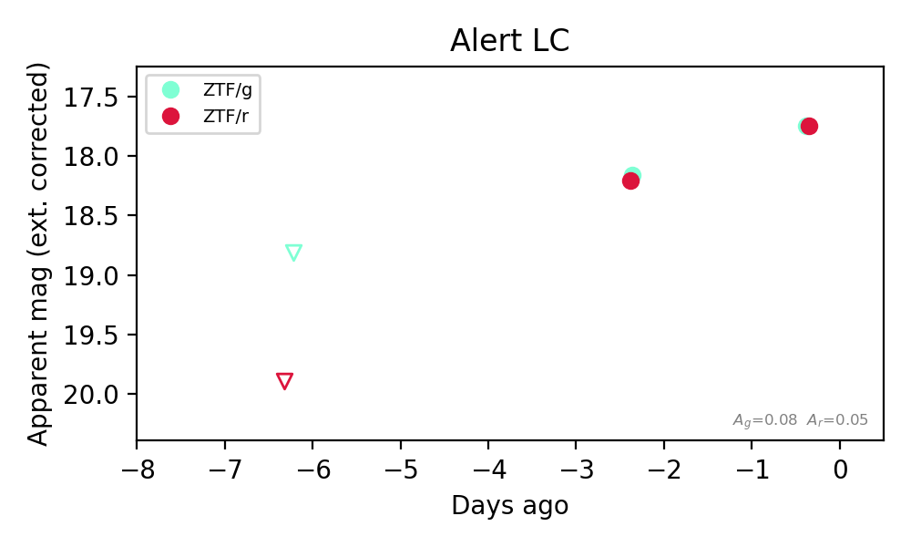
Extinction-corrected gr color:
From alerts: -0.0 +/- 0.08 mag
Consistent with synchrotron, g-r>0!
Rise Rate:
g: 0.21 mag/day
r: 0.43 mag/day
Fade Rate:
5. [ZTF] ZTF26abrgfyd (Afterglow?FBOT?) [Back to Top] [Share] [Trigger Swift] [Fritz Alert] [Fritz Source] [Lasair]RA, Dec: 19.61868, -27.09649 1h18m28.48s, -27d-5m-47.38sGalactic (l, b): 214.17147, -83.98418 ext(g-r) = 0.017


TESS: Sectors [ 3 30 97 107]
PS1: 0 sources in 3 arcsec
LegacySurvey: 1 sources in 3 arcsec Closest: d = 0.89 arcsec, 164.5 deg (east of north) photoz=0.16 (68% bounds 0.11, 0.21), type=SER peak abs mag (ext. corrected) = -21.59 (68% bounds -20.79, -22.22)

Rise Rate:
g: 2.08 mag/day
Fade Rate:
g: 21.34 mag/day
6. [ZTF] ZTF26abrmzgr (FBOT?) [Back to Top] [Share] [Trigger Swift] [Fritz Alert] [Fritz Source] [Lasair]RA, Dec: 271.74626, 31.56665 18h 6m59.10s, 31d33m59.93sGalactic (l, b): 57.99696, 22.63528 ext(g-r) = 0.069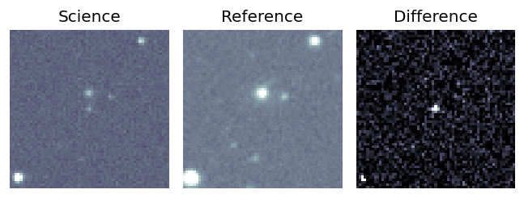
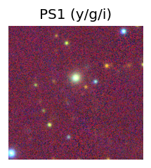
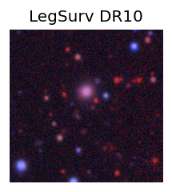
TESS: Sectors [ 26 40 53 79 80 118 119]
PS1: 0 sources in 3 arcsec
LegacySurvey: 1 sources in 3 arcsec Closest: d = 0.26 arcsec, 132.7 deg (east of north) photoz=1.25 (68% bounds 0.48, 2.06), type=REX peak abs mag (ext. corrected) = -26.28 (68% bounds -23.77, -27.61)
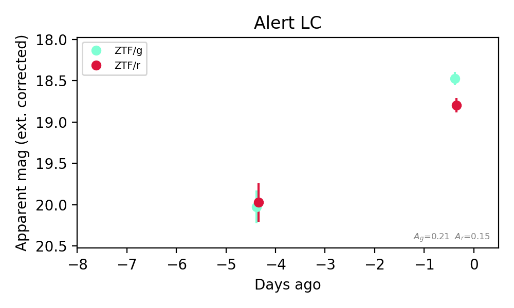
Extinction-corrected gr color:
From alerts: -0.32 +/- 0.12 mag
Rise Rate:
g: 0.39 mag/day
r: 0.29 mag/day
Fade Rate:
7. [ZTF] ZTF26absatsg (FBOT?) [Back to Top] [Share] [Trigger Swift] [Fritz Alert] [Fritz Source] [Lasair]RA, Dec: 240.49275, 16.34097 16h 1m58.26s, 16d20m27.49sGalactic (l, b): 29.34355, 44.73308 ext(g-r) = 0.037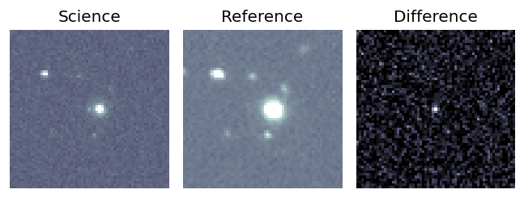
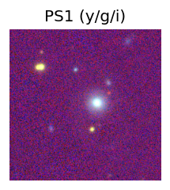
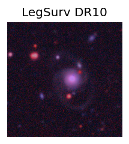
TESS: Sectors [ 51 78 117]
NED host (10 arcsec):Found WISEA J160157.95+162027.9 (G, 4.3″); NED spec-z: z=0.1335 [zflag SLS]; peak abs mag = -19.21
PS1: 0 sources in 3 arcsec
LegacySurvey: 1 sources in 3 arcsec Closest: d = 2.58 arcsec, 223.2 deg (east of north) photoz=0.41 (68% bounds 0.33, 0.52), type=SER peak abs mag (ext. corrected) = -21.95 (68% bounds -21.45, -22.6)
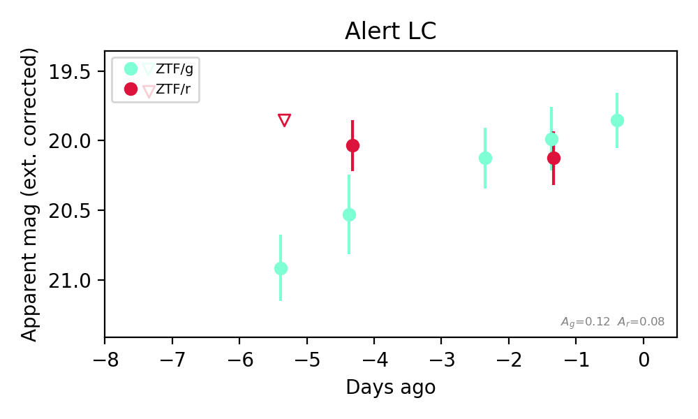
Extinction-corrected gr color:
From alerts: -0.14 +/- 0.3 mag
Consistent with synchrotron, g-r>0!
Rise Rate:
g: 0.21 mag/day
r: 0.02 mag/day
Fade Rate:
8. [ZTF] ZTF26absdxmw (FBOT?) [Back to Top] [Share] [Trigger Swift] [Fritz Alert] [Fritz Source] [Lasair]RA, Dec: 329.67496, 6.69153 21h58m41.99s, 6d41m29.51sGalactic (l, b): 65.48664, -36.2553 ext(g-r) = 0.051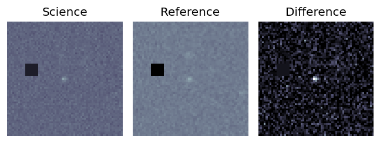
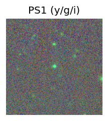
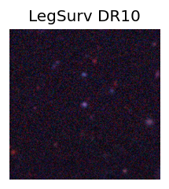
TESS: Sectors 82
SDSS (<15 kpc):Found SDSS phot-z: z=0.40; peak abs mag = -21.59
PS1: 0 sources in 3 arcsec
LegacySurvey: 1 sources in 3 arcsec Closest: d = 0.31 arcsec, 153.4 deg (east of north) photoz=0.31 (68% bounds 0.22, 0.5), type=REX peak abs mag (ext. corrected) = -20.94 (68% bounds -20.13, -22.19)
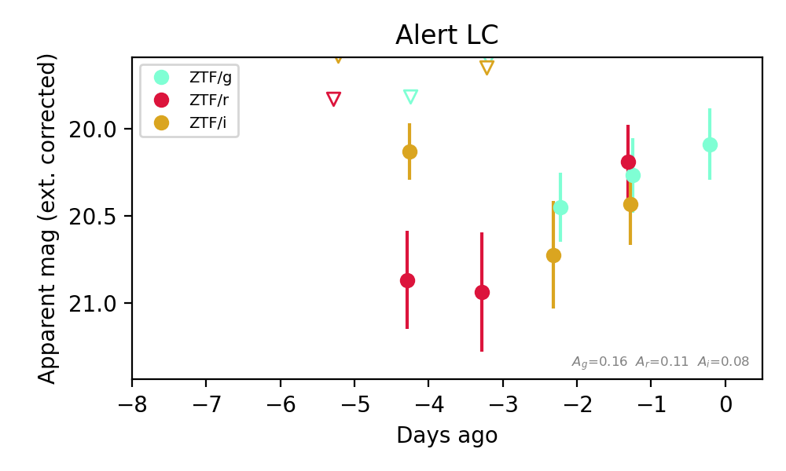
Extinction-corrected gr color:
From alerts: 0.07 +/- 0.3 mag
Extinction-corrected gi color:
From alerts: -0.17 +/- 0.32 mag
Extinction-corrected ri color:
From alerts: -0.24 +/- 0.32 mag
Consistent with synchrotron, g-r>0!
Rise Rate:
g: 0.03 mag/day
r: 0.25 mag/day
Fade Rate:
9. [ZTF] ZTF26absfhax (FBOT?) [Back to Top] [Share] [Trigger Swift] [Fritz Alert] [Fritz Source] [Lasair]RA, Dec: 6.25089, 4.28356 0h25m0.21s, 4d17m0.82sGalactic (l, b): 110.44348, -57.94579 WARNING: 1.45 deg from ecliptic plane ext(g-r) = 0.019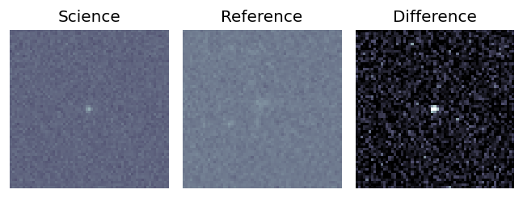
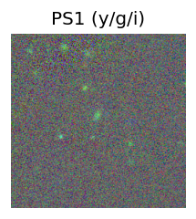
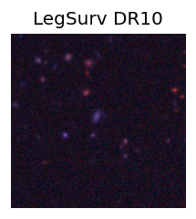
TESS: Sectors [42 43 70]
PS1: 0 sources in 3 arcsec
LegacySurvey: 1 sources in 3 arcsec Closest: d = 1.74 arcsec, 22.9 deg (east of north) photoz=0.14 (68% bounds 0.11, 0.18), type=EXP peak abs mag (ext. corrected) = -19.52 (68% bounds -19.01, -20.14)
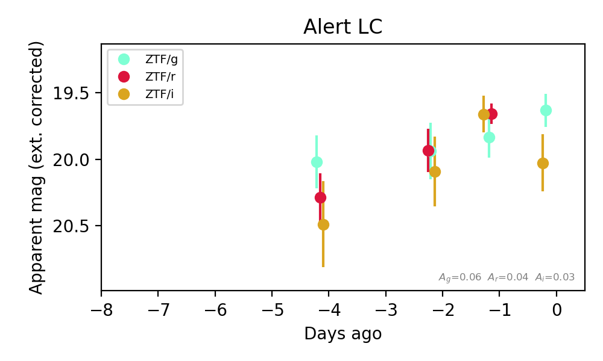
Extinction-corrected gr color:
From alerts: 0.17 +/- 0.17 mag
Extinction-corrected gi color:
From alerts: -0.39 +/- 0.25 mag
Extinction-corrected ri color:
From alerts: -0.0 +/- 0.16 mag
Consistent with synchrotron, g-r>0!
Rise Rate:
g: 0.07 mag/day
r: 0.21 mag/day
i: 0.04 mag/day
Fade Rate:
10. [ZTF] ZTF26abskibv (Afterglow?FBOT?) [Back to Top] [Share] [Trigger Swift] [Fritz Alert] [Fritz Source] [Lasair]RA, Dec: 315.14374, 28.21561 21h 0m34.50s, 28d12m56.19sGalactic (l, b): 73.39361, -11.72946 ext(g-r) = 0.221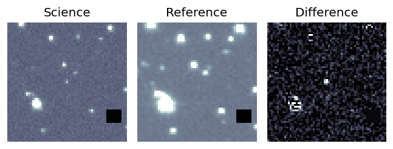
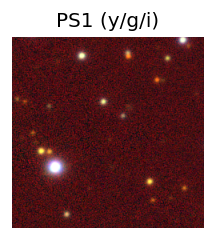

TESS: Sectors [ 15 41 55 82 120 121]
PS1: 1 source in 3 arcsec Closest: d = 2.43 arcsec photoz=0.18+/-2.29 peak abs mag = -21.75
LegacySurvey: 0 sources in 3 arcsec
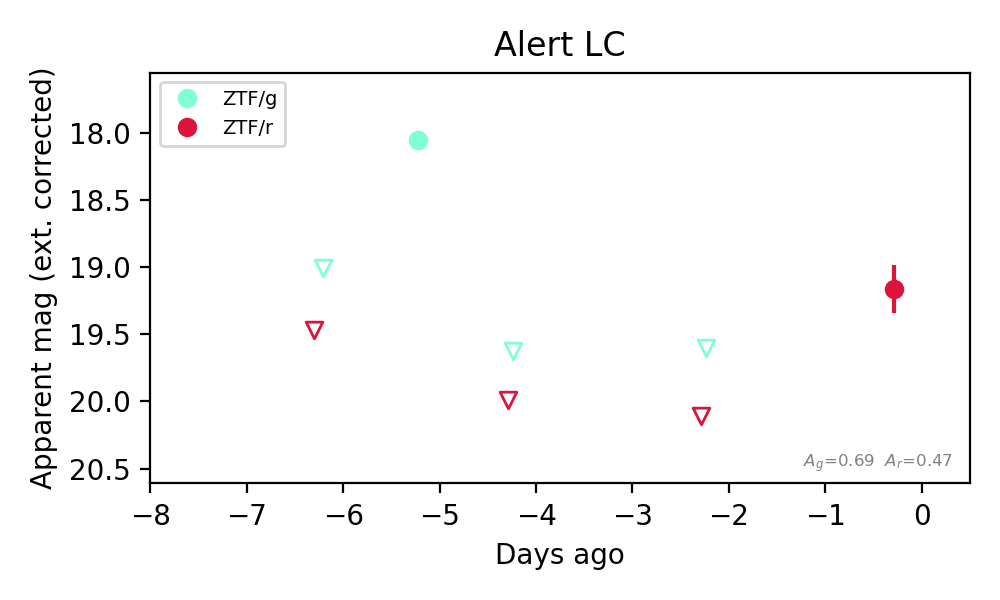
Rise Rate:
g: 0.97 mag/day
r: 0.47 mag/day
Fade Rate:
g: 1.58 mag/day